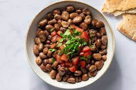

Ful Medames Recipe

Description
Ful Medames is the most popular breakfast item in Egypt.
It consists of fava beans that can be topped with a multided of toppings,
and is normally eaten with "balady" bread, an Egyptian bread that is most similar to
wholemeal pitta bread. Today we'll make it with olive oil, cumin, salt, and lime.
Ingredients
- Ful medames can (California Garden)
- salt
- Lime
- Extra virgin olive oil
- cumin
- Brown pitta x1
Steps
- Put your brown pitta in a toaster
- Heat up ful in a pan then put it in a serving bowl
- Add salt
- Squeeze half a lime on top
- Put some cumin on top
- Take your brown pitta out of the toaster and enjoy